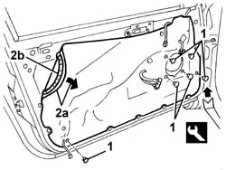
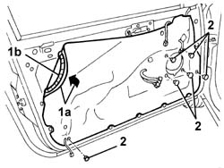

7005A04 front side door water guard protection - r r or replace with door panel removed
- Path
- Procedures > 70 FITTINGS > 7005 PASSENGER COMPARTMENT FRONT SIDE DOORS > 7005A front side door assembly > 7005A04 front side door water guard protection - r r or replace with door panel removed
- Kind
- repair procedure (removal / refitting; the operation number is the code)
- Applies to
- all engines; all production periods
- Interactive page
- https://sloeber94.github.io/elrnDB-a147/en/#/3025635
Applies to: all engines; all production periods
 Removing
Removing
 Refitting
Refitting1. Disengage the retainers using the special tool.
 | Name | Country |
|---|---|---|
1 | Scraper blade | 1.823.015.000 |
2. Remove the protective water shield (2a) detacting the adhesive (2b).

Applies to: all engines; all production periods
Refitting
RemovingCheck that the new seal is intact and not torn.
1. Fit the new seal (1a).
2. Engage the retainers.

Applies to: all engines; all production periods
Topics linked from this page (1)
Topics that link to this page (21)
- 5505B11 front door wiring - r r
- 7005A05 front side door water guard protection r r or arrange
- 7005C10 front door outer handle - r r with door panel removed
- 7005C11 front side door outside handle r r
- 7005C15 front side door lock barrel (in handle) - r+r
- 7005C42 front side door barrel/lock connecting linkage - r r with door panel removed
- 7005C43 link connecting front side door barrels/catch - r+r
- 7005C54 front side door internal opening return mechanism (with handle) - r r for repair or replace with different version
- 7005C55 front side door interior opening return device (with handle) - r+r for repair or replacement
- 7005D14 front side door descending window glass - r r with door panel (and mount frame) removed
- 7005D15 front side door descending window glass r r
- 7005D16 fixed window glass element - r r
- 7005D21 front door window front guide - r r
- 7005D24 front door window rear guide - r r
- 7005D25 front door window rear guide - r r
- 7005E91 One front door ANTI-BREAK IN PARTITION, left or right - R.R. with door panel removed
- 7005M20 front side door electric window system - r r with door panel/support frame removed
- 7005M21 front side door electrically operated window - r r
- 7005N20 front side door lock motor/catch assembly - rr with door panel and support frame removed
- 7005N21 front side door lock motor-lock assembley-r r
- 7205E36 Stripping FRONT SIDE DOOR